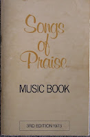

|
|
【勞苦重擔得安息】 |
|
Come unto me, Come unto me, |
|
|
|
|
|
|
|
-
Songs of Praise, from Scripture in Song


This book was published by New Zealand label "Scripture in
Song Recordings Ltd", PO Box 17161, Greenlane, Auckland, founded by Dale and
David Garrett.
It includes mainly short songs and praise choruses, suitable for repeated
use (sometimes called "seven-eleven" style).
The book had a number of editions, both words-only, melody line and full
score. The listing below is based on the 3rd music edition published in 1973.
A full music score is provided for most songs, arranged by Ena Thompson and
Bruce McGrail. Lyrics, chords and notes are all hand-written, but this is of a
very high quality so quite readable
There are 16 songs for which neither words nor music is provided in this
edition. Instead the title and a reference is given to another source where
the hymn can be found - this may be due to reasons of copyright permission.
Overall the book contains 107 full songs, all in English.
Thou art worthy [sound recording].
- Date
- 1974
- By
- Garratt, Dale., Garratt, David., Powell, Shirley., Clewett, Barry., Scripture in Song.
- Notes
-
For thou art great, Psalm 86: 10-12 --
Let the heavens rejoice, Psalm 96: 11-13 --
The law of the Lord, Psalm 19: 7-11 -- "
Call unto me, Jeremiah 33: 3 --
Whoso offereth praise, Psalm 50: 23 --
Blessed be the Lord God, Psalm 72: 18-19 --
Therefore with joy, Isaiah 12: 3-4 --
Great is the Lord, Psalm 48: 1-2 --
I will lift up my eyes, Psalm 121 --
Thy loving kindness, Psalm 63: 3-4 --
God is not a man, Numbers 23: 19-20 --
His name, Song of Solomon 1: 3 --
This is my rest forever, Psalm 132: 13-16 --
Thou art worthy, Revelation 4: 11.Psalms, hymns and spiritual songs in part written by New Zealand musicians Dale Garrett and Shirley Powell.
Lyrics printed on sleeve.
Performed by Dale & David Garratt, Whena Pink, Sarah Wynyard, Helen Kemp, Margaret & Michelle Fountain, Val Clark, Marianne Gray, Shirley & Graham Powell, Matthew Raymond, Rod Wallace, Brian Vincent, Brent Chambers, Garth Jacobson, Stewart Halstead, Peter Hart ; orchestrated & arranged by Barry Clewett.